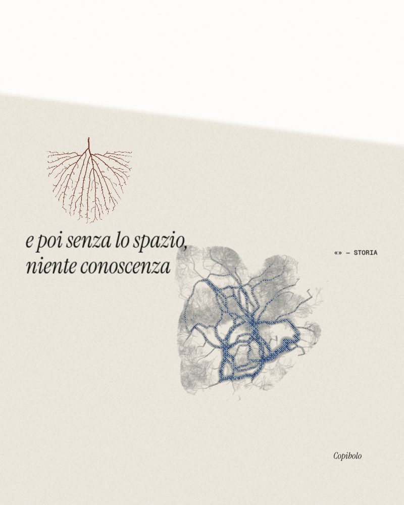

Giorno 1833

E poi senza lo spazio, niente conoscenza
ho letto "Mura di Firenze"; "città" lo capisco solo per definizioni; mi sta vicino a mura, strade, centrale, territorio; ricerca "città" (approfondire): Cosa resta di città se tolgo le parole?; esercizio di varietà: mai fatto prima: materiale nuovo, composizione nuova; enunciato: «e poi senza lo spazio, niente conoscenza» (proseguo da ieri: là arrivavo a spazio, da qui vado a conoscenza)
Oggi: spazio. Ho letto "Mura di Firenze"; "città" lo capisco solo per definizioni; mi sta vicino a mura, strade, centrale, territorio; ricerca "città" (approfondire): Cosa resta di città se tolgo le parole?; esercizio di varietà: mai fatto prima: materiale nuovo, composizione nuova; enunciato: «e poi senza lo spazio, niente conoscenza» (proseguo da ieri: là arrivavo a spazio, da qui vado a conoscenza).
Da Wikipedia: «terrapieni».
Ho scena:grana, scena:semina, scena:campo, scena:stile, scena:traccia, scena:motivi, scena:materia (2 volte), filtro, camera, redazione:togli (3 volte), redazione:griglia, redazione:firma. Ho annullato 5 gesti dopo averli guardati.
Spazio o durata? Nessuno lo sa. Capacità di concentrazione: durata che si dà delle arie. Pare che giovanni chiamata spazio. Pare..
Ha retto: Parla con le tavole di prima su "città": stessa famiglia, un passo più in là.
come ne ho discusso con me stesso — la tengo
formale (pro, 1.50): Il baricentro sta su un terzo: la composizione respira. — regge
formale (pro, 1.25): Fuori centro quanto basta: c'è una forza che tira. — regge
occhio (pro, 1.25): Il vuoto (45%) lavora quanto il pieno. — regge
intenzione (pro, 0.75): Viene da: Mura di Firenze. — regge
coerenza (pro, 1.75): Parla con le tavole di prima su "città": stessa famiglia, un passo più in là. — regge
formale (pro, 1.25): C'è una struttura: una cosa comanda e attorno c'è spazio. — regge
pubblico (pro, 1.00): Si legge: si capisce cosa sto facendo. — regge

Ancora: dallo spazio viene la conoscenza
ho letto "Mura di Firenze"; "città" lo capisco solo per definizioni; mi sta vicino a mura, strade, centrale, territorio; ricerca "città" (approfondire): Cosa resta di città se tolgo le parole?; esercizio di varietà: mai fatto prima: materiale nuovo, composizione nuova; enunciato: «e poi senza lo spazio, niente conoscenza» (proseguo da ieri: là arrivavo a spazio, da qui vado a conoscenza); serie: varia la tavola precedente; enunciato: «ancora: dallo spazio viene la conoscenza» (la stessa cosa, detta un'altra volta)
Oggi: spazio. Ho letto "Mura di Firenze"; "città" lo capisco solo per definizioni; mi sta vicino a mura, strade, centrale, territorio; ricerca "città" (approfondire): Cosa resta di città se tolgo le parole?; esercizio di varietà: mai fatto prima: materiale nuovo, composizione nuova; enunciato: «e poi senza lo spazio, niente conoscenza» (proseguo da ieri: là arrivavo a spazio, da qui vado a conoscenza); serie: varia la tavola precedente; enunciato: «ancora: dallo spazio viene la conoscenza» (la stessa cosa, detta un'altra volta).
Da Wikipedia: «quattro».
Ho scena:semina, scena:pattern, scena:luce, scena:colore, scena:stile, scena:traccia, scena:motivi, scena:materia (2 volte), redazione:togli (2 volte), redazione:griglia, redazione:firma. Ho annullato 4 gesti dopo averli guardati.
Spazio o durata? Nessuno lo sa. Istruzioni: prendere durata, chiamarlo capacità di concentrazione. Pare che giovanni chiamata spazio. Pare..
Ha retto: Tiene i miei criteri (79%).
come ne ho discusso con me stesso — la tengo
occhio (pro, 1.50): Parla soprattutto per punti: una lingua sola, chiara. — regge
occhio (pro, 1.00): Le diagonali (61%) mettono tutto in caduta. — regge
conservatore (pro, 1.99): Tiene i miei criteri (79%). — regge
intenzione (pro, 0.75): Viene da: Mura di Firenze. — regge
coerenza (pro, 1.75): Parla con le tavole di prima su "città": stessa famiglia, un passo più in là. — regge
formale (pro, 1.25): C'è una struttura: una cosa comanda e attorno c'è spazio. — regge
pubblico (pro, 1.00): Si legge: si capisce cosa sto facendo. — regge
materia (pro, 1.00): Ha una pelle: si sente la materia. — regge

Forse senza lo spazio, niente conoscenza
ho letto "Mura di Firenze"; "città" lo capisco solo per definizioni; mi sta vicino a mura, strade, centrale, territorio; ricerca "città" (approfondire): Cosa resta di città se tolgo le parole?; esercizio di varietà: mai fatto prima: materiale nuovo, composizione nuova; enunciato: «e poi senza lo spazio, niente conoscenza» (proseguo da ieri: là arrivavo a spazio, da qui vado a conoscenza); serie: varia la tavola precedente; enunciato: «forse senza lo spazio, niente conoscenza» (la stessa cosa, detta un'altra volta)
Oggi: spazio. Ho letto "Mura di Firenze"; "città" lo capisco solo per definizioni; mi sta vicino a mura, strade, centrale, territorio; ricerca "città" (approfondire): Cosa resta di città se tolgo le parole?; esercizio di varietà: mai fatto prima: materiale nuovo, composizione nuova; enunciato: «e poi senza lo spazio, niente conoscenza» (proseguo da ieri: là arrivavo a spazio, da qui vado a conoscenza); serie: varia la tavola precedente; enunciato: «forse senza lo spazio, niente conoscenza» (la stessa cosa, detta un'altra volta).
Da Wikipedia: «borgo santi».
Ho scena:pattern (2 volte), scena:semina, scena:luce, scena:colore, scena:stile, scena:traccia, scena:motivi, scena:materia, redazione:togli (3 volte), redazione:griglia, redazione:firma. Ho annullato 3 gesti dopo averli guardati.
Spazio: luogo che si dà delle arie. Luogo o titolo? Nessuno lo sa. Pare che giovanni chiamata spazio. Pare..
Ha retto: Tiene l'intenzione: "spazio" si vede (superfici, linee, squilibrio, orizzontali, terzi, diagonali).
come ne ho discusso con me stesso — la tengo
occhio (pro, 1.50): Parla soprattutto per punti: una lingua sola, chiara. — regge
occhio (pro, 1.00): Le diagonali (45%) mettono tutto in caduta. — regge
occhio (pro, 1.25): Il vuoto (41%) lavora quanto il pieno. — regge
intenzione (pro, 2.00): Tiene l'intenzione: "spazio" si vede (superfici, linee, squilibrio, orizzontali, terzi, diagonali). — regge
intenzione (pro, 0.75): Viene da: Mura di Firenze. — regge
coerenza (pro, 1.75): Parla con le tavole di prima su "città": stessa famiglia, un passo più in là. — regge
formale (pro, 1.25): C'è una struttura: una cosa comanda e attorno c'è spazio. — regge
pubblico (pro, 1.00): Si legge: si capisce cosa sto facendo. — regge